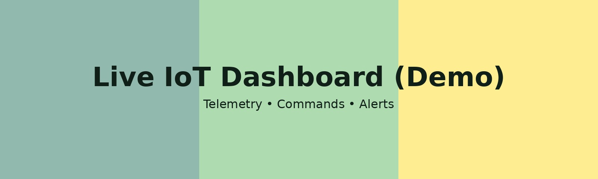

IoT Dashboard Demo
Live telemetry, device status, cloud commands, and AI insights (simulated).
Telemetry
Device Status
- Device: -
- Location: -
- Firmware: -
- State: Offline
- Last seen: —
- Temperature: —
- Humidity: —
AI Insight
Anomaly score: -
Command Center
Event Log
Demo data is simulated. Real deployments use Azure IoT Hub, Direct Methods, and Stream Analytics.